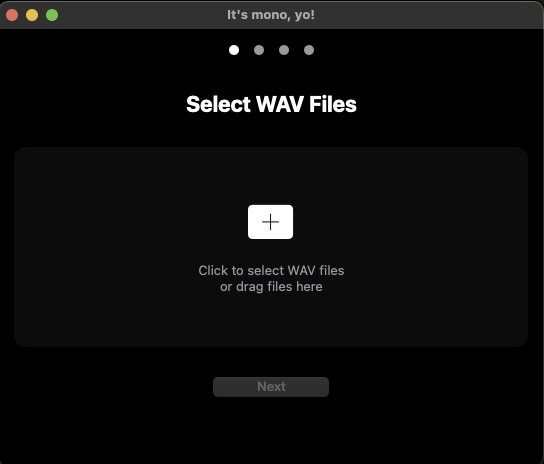

The elegant way to convert your WAV files to mono while preserving sample rates
 Download Latest VersionConvert multiple files simultaneously with real-time progress tracking for each file
Maintains original sample rates for the highest quality output possible
Beautiful dark interface designed for long sessions and visual comfort
Specifically designed for preparing samples for hardware like the Erica Synths Sample Drum module and other equipment that requires mono files.